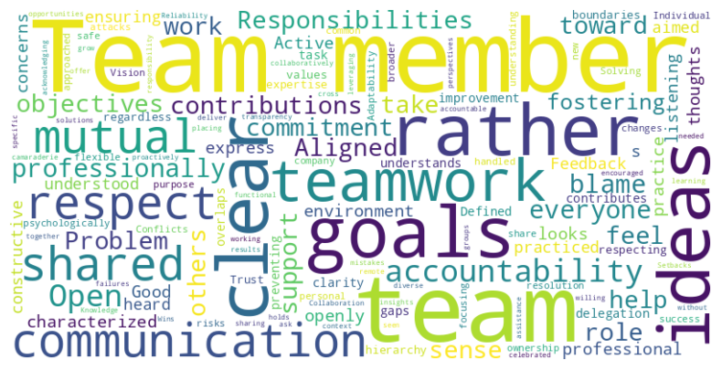
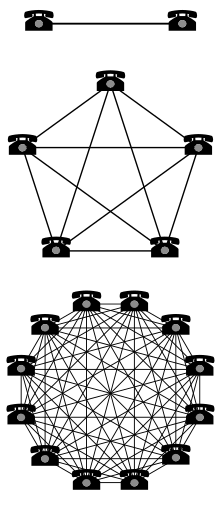

Links [1/2]
- Prelude - Damn fine Python and Django training
- Guild of educators
- Sheena's blog
- Mastodon: @sheena@fosstodon.org
- X/Twitter: @sheena_oconnell
To navigate this slide deck: Use cursor keys or click on arrows on bottom right. Use Esc key to toggle overview
Links [2/2]
Teamwork makes the dream work
Software development is a team sport
- Code is written by many people
- Code is reviewed
- Ideas need to be shared, problems solved, decisions made
- Cross-functional communication
What does good teamwork look like?
Can we engineer
"Good Teamwork"
from first principles?
Hi, I'm Sheena
🧗♀️🏕️🧭🇿🇦🖊️🛠️🔥🐕🎸👽👩🏻💻 🧑🏫- Coding since young teen
- Worked in a lot of startups
- Spent the last 5+ years in tech education
- Spoken to a LOT of companies about their needs
- Conference organiser
- PSF Education and outreach workgroup co-chair
- Founded Guild of Educators
- Founded Prelude - Gold standard Django and Python training
Ball Sports...

- Ball sports: everyone can visualise and understand
- Software dev: Opaque
Would a good team player...
- Try to win the game by themselves, never pass the ball?
- Focus on showing off their mad skills?
- Leave the ball lying around, walk away and do something else?
- Kick the ball towards their own goal?
- Tackle someone on their own team?
- Leave a struggling team mate to struggle?
- Pass the ball to people who are in a bad position?
- Pass a ball, then wonder off?
Good team players
- Take responsibility for their part
- Focus on the team's success
- Focus on setting each player up for success - support as needed
- Accept support from team mates
- Pass the ball with skill
- Receive the ball with skill
Ball passing in software development...
- Making a PR
- Asking for help?
- Writing code someone else will rely on
Take coordination seriously
Know where the ball is, where it's going, what the other players are up to
Coordination is not free
Every team member should take coordination seriously
It is a part of our craft
Coordination mechanisms
- Meetings
- Written communication
- Project management tools
Move toward the goal
- But where is it?
- Software dev is a process of discovery
- Identify good/bad ideas QUICKLY
- Learn QUICKLY
- from each other
- from the world
- Defer many decisions, avoid one way doors
Optimise feedback cycles

To be a good team player
- Get good at passing the ball
- Take coordination seriously
- Optimise feedback cycles
- AND ...